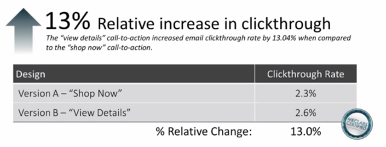
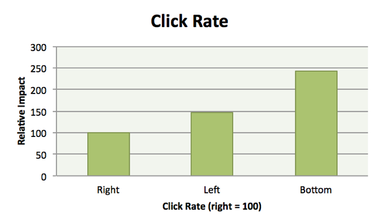
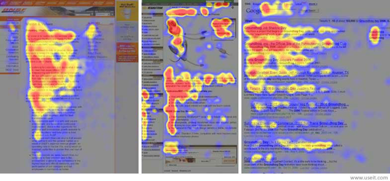
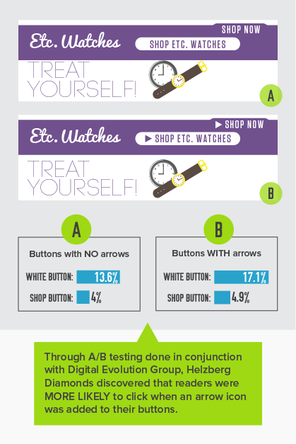
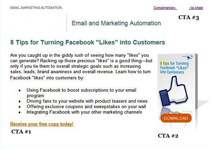

After your subscribers open and actually read your email, the next challenge is to get them to convert. In other words, it’s time to take action.
The words and images you use to ask for that conversion are known as a call to action or CTA. A CTA asks the reader to take the next step. Here are examples of CTAs in an email:
Click here to download the report
or

What does research say is the best way to create calls to action, so they get clicked? This depends on the reader, the product, the selling proposition and the overall marketing strategy, so it’s difficult to find hard and fast numbers, but here are four tips guaranteed to improve your conversion rates.
Words Matter: Offer High Value at Low Cost
Marketing Experiments is one of the few institutions that have tested CTAs in email marketing. What did researchers find? CTAs that offer high value at low cost to the reader get more clicks.
Click-thru increased 13 percent after words in the CTA button were changed:

Why did Version B perform better than Version A?
According to the researchers, Version A asks for too much, too soon. It invites readers to “shop,” which is a high-cost proposition. Readers are afraid they’ll have to decide immediately whether to buy. In the readers’ minds, clicking means pulling out the credit card. It’s too much, too soon.
In contrast, Version B requires far less commitment. “View Details,” it invites. No pressure. Readers know they’re not required to make a big decision; they’re merely exploring a product they’re interested in. Most of all, there is no indication of an impending transaction. In short, the readers feel safe.
“For every call to action in an email, there is an implied psychological calculus cost in the mind of the customer (value vs cost),” the researchers concluded.
Marketing Experiments researchers found similar improvements when they increased the value while lowering the implied cost of other email CTAs:
- “Find your solution” vs “Learn More”: 77 percent increase
- “Subscribe & Save” vs “View Subscription Options”: +181 percent increase
- “Get Started” vs “See How Sermo Works”: +104 percent increase
Key Takeaway: Ask for the appropriate action at the right time. Don’t try to make the sale within your email; that’s the job of your landing page. Offer value at low or no cost to your readers in exchange for the click.
Location Counts: Where to Place Your CTA
Does the location of a CTA within your email make a difference in click rates?
In this study, Canopy Labs compared the performance of CTAs placed in different locations in an email and found that a CTA at the bottom of an email outperformed CTAs placed on the left or right side of an email.

This makes sense, because your email must logically lead the reader to the CTA. A CTA doesn’t exist in isolation from the rest of the content. Therefore, readers are more likely to click after reading or scanning your email.
Notice that the left-positioned CTA has a higher click rate than the CTA placed on the right. This supports the finding that readers tend to view online content in an F-shaped pattern.
According to an eye-tracking study by the Nielsen Norman Group, the dominant eye movement of users reading web pages looked very much like an F:

Email readers follow the same eye pattern, meaning the least prominent part of your email is the right side.
Key Takeaway: If you have only one CTA, place it at the bottom of your email. The left side is a good place for a second CTA.
Buttons Are Key: Small Change, Big Improvement
In A/B testing, you’ll sometimes find the smallest change can make a big difference in results.
That’s what the Digital Evolution Group found when it compared two types of CTA buttons: one without arrows and one with arrows. Turns out tiny arrows significantly increase click rates:

But design isn’t everything. Words matter. The fabulous Joanna Wiebe suggests avoiding “friction words” in your copy:
Friction words describe things people have to do, not things they want to do. These words cause cognitive friction. Web copy that converts is focused on what people want to do. Most often, friction words are found in calls to action. Why is that? Because, to my great dismay, people don’t spend much time writing buttons.
Here are some examples of words that Joanna suggests avoiding:
- Buy
- Sign Up
- Submit
- Give
- Invest
- Donate/Sponsor/Support
- Complete
Here are some low-friction words she suggests instead:
- Get
- Check Out (as in “check this out,” not “checkout”)
- Discover
- Reveal
- Earn
Key Takeaway: Use graphic elements, such as arrows, to call attention to your CTA. Spend time crafting the copy for buttons.
A Message Worth Repeating: Many CTAs, One Common Goal
An article in Marketing Profs compared the click rates of three CTAs in a single email. Can you guess which CTA got the most clicks?

The first CTA got 51 percent of the clicks on this email. It’s text-based, but in a contrasting color from the rest of the email. It’s written in a way that offers value (receive something today) at low cost (free). And note that this CTA is at the bottom of the email, which is consistent with Canopy Labs’ findings on the optimal location for CTAs.
Coming up a close second was CTA #2, with 41 percent of clicks. The location is unfortunate, but it’s the most visible CTA because it’s graphical and has a bright orange button. Would it have outperformed CTA #1 if placed on the left side of the email?
Finally, CTA #3 got 8 percent of the clicks. Formatted in a font smaller than 12 point and located in the upper-right corner of the email, the CTA is barely noticeable. Yet the wording is such that clicking requires very little of the reader but offers something of value: “Complimentary X tip sheet.”
These findings are consistent with the key takeaways from other studies: Don’t ask too much of your readers. Offer something of high value at low or no cost. Place your CTA at the bottom of the email, and make it visually attractive.
These findings also point to the importance of having multiple CTAs throughout your email. Even the obscure CTA delivered a few more clicks to the landing page. What if that link hadn’t been there? In an email blast opened by 1,000 readers, that would have been a loss of 80 clicks.
Key Takeaway: Have several CTAs in your email, and use both text and graphical CTAs.
Note: Don’t rely on image-based CTAs, because some people have images turned off in their emails. This post shows you how to use a table instead of a button image. The result looks like a button and will show up even if email images are switched off.
We Need More Research
These studies tell us that the words, location and design of email CTAs significantly affect click-thru rates. But many of the studies need to be replicated to determine whether the findings apply to most emails most of the time. Here are the email CTAs I’m particularly interested in:
- Which perform better, text or button CTAs?
- Among button CTAs, does button color make a difference?
- What about CTAs in the email PS? Are they as effective as marketers claim?
- When it comes to multiple CTAs, how much is too much? When do returns begin to diminish?
- Can you apply the results of landing-page CTA research to email CTAs?
We have many assumptions to test and a lot more to learn about email calls to action. Have you tested your email CTAs? What did you discover? Please share your results with us!